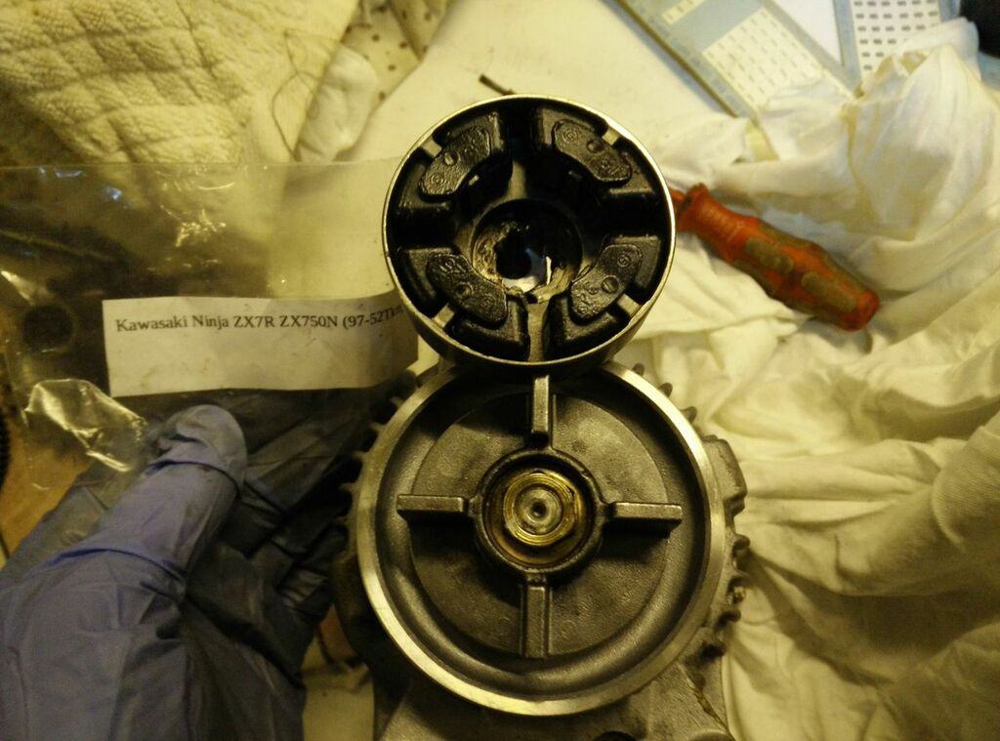

Cush Rubbers
The 903 can be quite brutal with these. I've seen a Triumph 955 with pristine rubbers at 100,000km,
while Nell's were mauled at 30,000km. The Triumph rubbers appeared to be the same part.
The Dane reported
that the cush rubbers from a Kawasaki ZX7R and ZX750N are a direct replacement.

This is his picture of them installed.
mikerj reported
that the MV Augusta F4 uses the same rubbers.
Kawasaki Part Number 92075-1790, used on ZG1000 / ZG1200 Voyager, ZL900 / ZL1000 Eliminator, ZR1100 Zephyr, ZRX1100 / ZRX1200, ZX750J/K/L/M/P (ZX-7R),
ZX900A (GPZ900R), ZX900B (ZX-9R), ZX1000A (GPZ100RX), ZX1000B (ZX-10),ZX1100D/E (GPZ1100), ZX1200 (ZZR1200)
Stator
tractorman reported
on the forum that the screws holding the bearing into the alternator cover came loose which resulted in the stator being damaged. A heap of Nippon Denso
alternators were assessed and a stator from a Holden Barina was found to be the same diameter, soldered in and operated successfully. "These alternators are used
in many cars but with different mountings and shafts ...."
The Holden Barina has had six generations badge-engineered from the Suzuki Cultus, Opel Corsa, and Daewoo Kalos, so just which was the donor stator is not clear.
If a stator is needed, a rumage through boxes of Nippon Denso alternators will turn up plenty of donors.